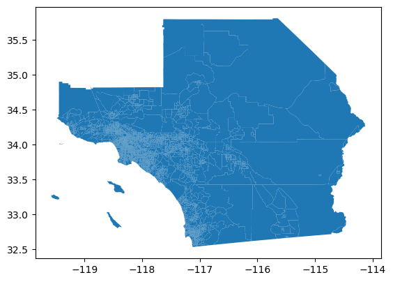
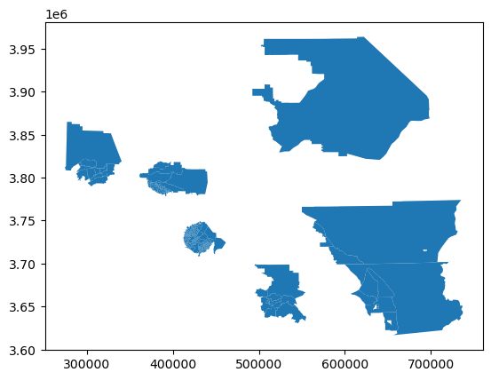

import geopandas as gpdGeoprocessing
import pandas as pdgdf = gpd.read_parquet("~/data/scag_region.parquet")gdf.shape(4580, 194)type(gdf)geopandas.geodataframe.GeoDataFramegdf.head()| geoid | n_asian_under_15 | n_black_under_15 | n_hispanic_under_15 | n_native_under_15 | n_white_under_15 | n_persons_under_18 | n_asian_over_60 | n_black_over_60 | n_hispanic_over_60 | ... | year | n_total_housing_units_sample | p_nonhisp_white_persons | p_white_over_60 | p_black_over_60 | p_hispanic_over_60 | p_native_over_60 | p_asian_over_60 | p_disabled | geometry | |
|---|---|---|---|---|---|---|---|---|---|---|---|---|---|---|---|---|---|---|---|---|---|
| 0 | 06037128702 | 58.0 | 0.0 | 223.0 | 0.0 | 475.0 | 986.0 | NaN | NaN | NaN | ... | 2010 | 2903.0 | 64.726214 | NaN | NaN | NaN | NaN | NaN | NaN | POLYGON ((-118.44870 34.16485, -118.43997 34.1... |
| 1 | 06037131600 | 83.0 | 62.0 | 777.0 | 0.0 | 135.0 | 1355.0 | NaN | NaN | NaN | ... | 2010 | 1487.0 | 28.679979 | NaN | NaN | NaN | NaN | NaN | NaN | POLYGON ((-118.56229 34.22033, -118.55792 34.2... |
| 2 | 06037134104 | 287.0 | 17.0 | 816.0 | 0.0 | 61.0 | 1323.0 | NaN | NaN | NaN | ... | 2010 | 1388.0 | 14.846188 | NaN | NaN | NaN | NaN | NaN | NaN | POLYGON ((-118.57976 34.21558, -118.57539 34.2... |
| 3 | 06037134304 | 90.0 | 24.0 | 298.0 | 0.0 | 89.0 | 520.0 | NaN | NaN | NaN | ... | 2010 | 928.0 | 33.378933 | NaN | NaN | NaN | NaN | NaN | NaN | POLYGON ((-118.61472 34.21952, -118.61039 34.2... |
| 4 | 06037242000 | 0.0 | 229.0 | 681.0 | 0.0 | 0.0 | 1164.0 | NaN | NaN | NaN | ... | 2010 | 1054.0 | 0.058565 | NaN | NaN | NaN | NaN | NaN | NaN | POLYGON ((-118.25416 33.93882, -118.25413 33.9... |
5 rows × 194 columns
gdf.columns.valuesarray(['geoid', 'n_asian_under_15', 'n_black_under_15',
'n_hispanic_under_15', 'n_native_under_15', 'n_white_under_15',
'n_persons_under_18', 'n_asian_over_60', 'n_black_over_60',
'n_hispanic_over_60', 'n_native_over_60', 'n_persons_over_60',
'n_white_over_60', 'n_asian_over_65', 'n_black_over_65',
'n_hispanic_over_65', 'n_native_over_65', 'n_white_over_65',
'n_persons_over_75', 'n_persons_over_15', 'n_civilians_over_16',
'n_civilians_over_18', 'n_persons_over_25', 'n_age_5_older',
'n_asian_age_distribution', 'n_black_age_distribution',
'n_hispanic_age_distribution', 'n_native_age_distribution',
'n_white_age_distribution', 'n_asian_persons', 'n_black_persons',
'n_chinese_persons', 'n_labor_force', 'n_civilians_16_64',
'n_edu_college_greater', 'n_cuban_pop',
'n_poverty_determined_asian', 'n_poverty_determined_black',
'n_total_pop_sample', 'n_female_over_16',
'n_poverty_determined_families', 'n_poverty_determined_hispanic',
'n_disabled', 'n_housing_units_multiunit_structures_denom',
'n_poverty_determined_native', 'n_poverty_determined_persons',
'n_poverty_determined_white', 'n_employed_over_16',
'n_total_families', 'n_foreign_born_pop',
'n_female_headed_families', 'n_filipino_persons',
'n_female_labor_force', 'n_german_pop', 'n_german_born_pop',
'n_household_recent_move', 'n_structures_30_old',
'n_hawaiian_persons', 'n_total_households', 'n_asian_households',
'n_black_households', 'n_hispanic_households',
'n_white_households', 'median_household_income',
'median_income_asianhh', 'median_income_blackhh',
'median_income_hispanichh', 'median_income_whitehh',
'n_hispanic_persons', 'n_edu_hs_less', 'n_total_housing_units',
'per_capita_income', 'n_asian_indian_persons', 'n_irish_pop',
'n_irish_born_pop', 'n_italian_pop', 'n_italian_born_pop',
'n_japanese_persons', 'n_korean_persons', 'n_limited_english',
'n_employed_manufacturing', 'n_married', 'n_mexican_pop',
'median_home_value', 'median_contract_rent',
'n_housing_units_multiunit_structures', 'n_recent_immigrant_pop',
'n_poverty_over_65', 'n_poverty_asian', 'n_naturalized_pop',
'n_poverty_black', 'n_poverty_families_children',
'n_nonhisp_black_persons', 'n_poverty_hispanic',
'n_nonhisp_white_persons', 'n_poverty_native', 'n_poverty_persons',
'n_native_persons', 'n_poverty_white', 'n_occupied_housing_units',
'n_other_language', 'n_owner_occupied_housing_units',
'p_recent_immigrant_pop', 'p_household_recent_move',
'p_asian_under_15', 'p_black_under_15', 'p_hispanic_under_15',
'p_native_under_15', 'p_white_under_15', 'p_persons_under_18',
'p_structures_30_old', 'p_persons_over_60', 'p_asian_over_65',
'p_black_over_65', 'p_hispanic_over_65', 'p_native_over_65',
'p_poverty_rate_over_65', 'p_white_over_65', 'p_persons_over_75',
'p_poverty_rate_asian', 'p_asian_persons', 'p_poverty_rate_black',
'p_chinese_persons', 'p_edu_college_greater', 'p_cuban_pop',
'p_foreign_born_pop', 'p_female_headed_families',
'p_filipino_persons', 'p_female_labor_force',
'p_poverty_rate_children', 'p_german_pop', 'p_german_born_pop',
'p_hawaiian_persons', 'p_hispanic_persons',
'p_poverty_rate_hispanic', 'p_edu_hs_less',
'p_asian_indian_persons', 'p_irish_pop', 'p_irish_born_pop',
'p_italian_pop', 'p_italian_born_pop', 'p_japanese_persons',
'p_korean_persons', 'p_limited_english',
'p_employed_manufacturing', 'p_married', 'p_mexican_pop',
'p_housing_units_multiunit_structures', 'p_poverty_rate_native',
'p_naturalized_pop', 'p_nonhisp_black_persons', 'p_black_persons',
'p_native_persons', 'p_other_language', 'n_total_pop',
'p_owner_occupied_units', 'p_poverty_rate', 'p_puerto_rican_pop',
'p_employed_professional', 'n_puerto_rican_pop',
'n_employed_professional', 'p_russian_pop', 'p_russian_born_pop',
'p_scandanavian_pop', 'p_scandanavian_born_pop',
'p_employed_self_employed', 'p_unemployment_rate',
'p_vacant_housing_units', 'p_veterans', 'p_vietnamese_persons',
'p_widowed_divorced', 'p_poverty_rate_white',
'n_renter_occupied_housing_units', 'n_russian_pop',
'n_russian_born_pop', 'n_scandaniavian_pop',
'n_scandaniavian__born_pop', 'n_employed_self_employed',
'n_unemployed_persons', 'n_vacant_housing_units', 'n_veterans',
'n_vietnamese_persons', 'n_widowed_divorced', 'n_white_persons',
'year', 'n_total_housing_units_sample', 'p_nonhisp_white_persons',
'p_white_over_60', 'p_black_over_60', 'p_hispanic_over_60',
'p_native_over_60', 'p_asian_over_60', 'p_disabled', 'geometry'],
dtype=object)gdf.n_total_pop0 5497.0
1 5659.0
2 4486.0
3 2924.0
4 3415.0
...
4575 3672.0
4576 5257.0
4577 6765.0
4578 2981.0
4579 3994.0
Name: n_total_pop, Length: 4580, dtype: float64gdf.geometry0 POLYGON ((-118.44870 34.16485, -118.43997 34.1...
1 POLYGON ((-118.56229 34.22033, -118.55792 34.2...
2 POLYGON ((-118.57976 34.21558, -118.57539 34.2...
3 POLYGON ((-118.61472 34.21952, -118.61039 34.2...
4 POLYGON ((-118.25416 33.93882, -118.25413 33.9...
...
4575 POLYGON ((-118.50373 34.42607, -118.50050 34.4...
4576 POLYGON ((-118.20731 33.90754, -118.20641 33.9...
4577 POLYGON ((-119.22134 34.18130, -119.21727 34.1...
4578 POLYGON ((-116.51068 33.80502, -116.51069 33.8...
4579 POLYGON ((-118.41379 34.17940, -118.41160 34.1...
Name: geometry, Length: 4580, dtype: geometrygdf.plot()
Projections
gdf.crs<Geographic 2D CRS: EPSG:4326>
Name: WGS 84
Axis Info [ellipsoidal]:
- Lat[north]: Geodetic latitude (degree)
- Lon[east]: Geodetic longitude (degree)
Area of Use:
- name: World.
- bounds: (-180.0, -90.0, 180.0, 90.0)
Datum: World Geodetic System 1984 ensemble
- Ellipsoid: WGS 84
- Prime Meridian: Greenwichgdf1 = gdf.to_crs(gdf.estimate_utm_crs())gdf1.crs<Projected CRS: EPSG:32611>
Name: WGS 84 / UTM zone 11N
Axis Info [cartesian]:
- E[east]: Easting (metre)
- N[north]: Northing (metre)
Area of Use:
- name: Between 120°W and 114°W, northern hemisphere between equator and 84°N, onshore and offshore. Canada - Alberta; British Columbia (BC); Northwest Territories (NWT); Nunavut. Mexico. United States (USA).
- bounds: (-120.0, 0.0, -114.0, 84.0)
Coordinate Operation:
- name: UTM zone 11N
- method: Transverse Mercator
Datum: World Geodetic System 1984 ensemble
- Ellipsoid: WGS 84
- Prime Meridian: Greenwichgdf1.plot()county = gdf1.geoid.str[0:5]county0 06037
1 06037
2 06037
3 06037
4 06037
...
4575 06037
4576 06037
4577 06111
4578 06065
4579 06037
Name: geoid, Length: 4580, dtype: objectgdf1['county'] = countygdf1.plot(column='county', categorical=True, legend=True)names = {"06025": "Imperial",
"06037": "Los Angeles",
"06059": "Orange",
"06065": "Riverside",
"06071": "San Bernardino",
"06073": "San Diego",
"06111": "Ventura"}gdf1.county.map(names)0 Los Angeles
1 Los Angeles
2 Los Angeles
3 Los Angeles
4 Los Angeles
...
4575 Los Angeles
4576 Los Angeles
4577 Ventura
4578 Riverside
4579 Los Angeles
Name: county, Length: 4580, dtype: objectgdf1['county_name'] = gdf1.county.map(names)gdf1.plot(column='county_name', categorical=True, legend=True)Dissolve
counties = gdf1.dissolve(by='county')counties.plot()counties.shape(7, 195)gdf1.shape(4580, 196)county_centroids = counties.centroidbase = counties.plot()
county_centroids.plot(color='r', ax=base)counties.crs = gdf1.crscounties.crs<Projected CRS: EPSG:32611>
Name: WGS 84 / UTM zone 11N
Axis Info [cartesian]:
- E[east]: Easting (metre)
- N[north]: Northing (metre)
Area of Use:
- name: Between 120°W and 114°W, northern hemisphere between equator and 84°N, onshore and offshore. Canada - Alberta; British Columbia (BC); Northwest Territories (NWT); Nunavut. Mexico. United States (USA).
- bounds: (-120.0, 0.0, -114.0, 84.0)
Coordinate Operation:
- name: UTM zone 11N
- method: Transverse Mercator
Datum: World Geodetic System 1984 ensemble
- Ellipsoid: WGS 84
- Prime Meridian: Greenwichcounties.areacounty
06025 1.160447e+10
06037 1.061663e+10
06059 2.068050e+09
06065 1.890743e+10
06071 5.204763e+10
06073 1.102391e+10
06111 4.811482e+09
dtype: float64buffer = county_centroids.buffer(16093.4) # 10 mile bufferbase = counties.plot()
buffer.plot(color='green', ax=base)
county_centroids.plot(color='r', ax=base)
gdf1.sindex.query(buffer, predicate='intersects')array([[ 0, 0, 0, 0, 0, 0, 0, 0, 1, 1, 1,
1, 1, 1, 1, 1, 1, 1, 1, 1, 1, 1,
1, 1, 1, 1, 1, 1, 1, 1, 1, 1, 1,
1, 1, 1, 1, 1, 1, 1, 1, 1, 1, 1,
1, 1, 1, 1, 1, 1, 1, 1, 1, 1, 1,
1, 1, 1, 1, 1, 1, 1, 1, 1, 1, 1,
1, 2, 2, 2, 2, 2, 2, 2, 2, 2, 2,
2, 2, 2, 2, 2, 2, 2, 2, 2, 2, 2,
2, 2, 2, 2, 2, 2, 2, 2, 2, 2, 2,
2, 2, 2, 2, 2, 2, 2, 2, 2, 2, 2,
2, 2, 2, 2, 2, 2, 2, 2, 2, 2, 2,
2, 2, 2, 2, 2, 2, 2, 2, 2, 2, 2,
2, 2, 2, 2, 2, 2, 2, 2, 2, 2, 2,
2, 2, 2, 2, 2, 2, 2, 2, 2, 2, 2,
2, 2, 2, 2, 2, 2, 2, 2, 2, 2, 2,
2, 2, 2, 2, 2, 2, 2, 2, 2, 2, 2,
2, 2, 2, 2, 2, 2, 2, 2, 2, 2, 2,
2, 2, 2, 2, 2, 2, 2, 2, 2, 2, 2,
2, 2, 2, 2, 2, 2, 2, 2, 2, 2, 2,
2, 2, 2, 2, 2, 2, 2, 2, 2, 2, 2,
2, 2, 2, 2, 2, 2, 2, 2, 2, 2, 2,
2, 2, 2, 2, 2, 2, 2, 2, 2, 2, 2,
2, 2, 2, 2, 2, 2, 2, 2, 2, 2, 2,
2, 2, 2, 2, 2, 2, 2, 2, 2, 2, 2,
2, 2, 2, 2, 2, 2, 2, 2, 2, 2, 2,
2, 2, 2, 2, 2, 2, 2, 2, 2, 2, 2,
2, 2, 2, 2, 2, 2, 2, 2, 2, 2, 2,
2, 2, 2, 2, 2, 2, 2, 2, 2, 2, 2,
2, 2, 2, 2, 2, 2, 2, 3, 3, 3, 3,
3, 4, 5, 5, 5, 5, 5, 5, 5, 5, 5,
5, 5, 5, 6, 6, 6, 6, 6, 6, 6, 6,
6, 6, 6, 6, 6, 6, 6],
[1431, 1017, 1512, 679, 4303, 4341, 3220, 4445, 4338, 3280, 2904,
2078, 2864, 1167, 1389, 3288, 3870, 3286, 3285, 3494, 19, 3284,
734, 2040, 3483, 4349, 3763, 3728, 3475, 2039, 1053, 3013, 897,
4450, 3238, 4111, 1417, 1596, 3158, 137, 1300, 2388, 3159, 855,
4213, 138, 4486, 4561, 3271, 3871, 3459, 1388, 3287, 1407, 4256,
4094, 854, 3817, 853, 1341, 4488, 3598, 3491, 1055, 3177, 1765,
1767, 4274, 1683, 3429, 3476, 3263, 2100, 3260, 1160, 1076, 3245,
3234, 1073, 4125, 4207, 3915, 3235, 608, 4539, 540, 1257, 4221,
1025, 1721, 3252, 3427, 3485, 3282, 303, 3816, 1074, 1831, 4259,
2118, 4127, 3325, 3864, 283, 1780, 609, 2101, 1779, 1868, 1139,
4099, 152, 3903, 3264, 562, 3251, 4220, 1869, 1024, 3323, 153,
3267, 3913, 1834, 1836, 1833, 1832, 611, 1680, 3289, 3579, 3270,
1870, 563, 281, 2074, 3266, 1564, 3326, 2098, 2099, 3324, 607,
302, 606, 301, 2076, 1141, 305, 612, 1250, 1026, 4164, 2060,
1837, 3495, 1254, 4367, 4126, 3366, 605, 604, 2095, 3364, 3314,
286, 1265, 3262, 1023, 542, 3365, 3580, 4540, 4541, 3283, 285,
4366, 3279, 3278, 613, 307, 1027, 3914, 867, 1707, 2062, 3316,
3265, 2061, 1266, 1086, 2091, 3432, 2097, 3433, 3315, 3435, 4251,
2063, 4135, 3434, 3062, 3061, 3791, 1271, 3800, 2075, 308, 4267,
4046, 2064, 860, 3436, 2096, 1087, 3023, 615, 3438, 3115, 616,
309, 614, 3437, 3700, 311, 1177, 3912, 1781, 304, 1830, 4100,
1829, 3274, 3440, 310, 3439, 3802, 3030, 252, 2065, 3595, 2814,
2066, 3024, 4252, 3594, 2090, 4102, 4025, 1028, 4103, 868, 3441,
4165, 859, 3035, 861, 3321, 2089, 3233, 2092, 1968, 3272, 3815,
3430, 2073, 3034, 3862, 1867, 3249, 3250, 151, 1022, 3792, 3040,
1072, 2280, 1935, 3036, 863, 3039, 4104, 1172, 4105, 312, 4273,
3111, 3294, 1937, 864, 1178, 3701, 1936, 862, 3037, 3347, 3038,
1934, 3042, 1804, 3292, 655, 617, 2067, 872, 2172, 2171, 3442,
4043, 321, 3798, 4026, 3041, 1916, 1803, 4474, 3959, 1720, 437,
3976, 489, 1637, 963, 4128, 3600, 1757, 2487, 481, 2486, 3571,
3969, 1084, 3636, 2675, 4247, 2025, 924, 3715, 2023, 1571, 4337,
2022, 2379, 4248, 1374, 1572, 1931, 1209]])res = gdf1.sindex.query(buffer, predicate='intersects')gdf1.iloc[res[1]].plot()
base = gdf1.plot(alpha=0.5)
gdf1.iloc[res[1]].plot(ax=base, color='yellow')
buffer.plot(ax=base, color='green')counties.boundarycounty
06025 LINESTRING (622670.817 3613246.064, 608496.116...
06037 MULTILINESTRING ((334535.659 3765052.961, 3344...
06059 LINESTRING (405551.296 3725825.754, 404548.958...
06065 LINESTRING (450519.329 3730169.444, 450507.821...
06071 LINESTRING (437464.649 3750033.907, 437589.410...
06073 LINESTRING (476144.129 3623310.643, 476302.004...
06111 MULTILINESTRING ((262292.345 3684931.770, 2623...
dtype: geometrycounties.boundary.plot()bbuffer = counties.boundary.buffer(10000)bbuffer.plot()ints = gdf1.sindex.query(bbuffer, predicate='intersects')ints.shape(2, 3843)gdf1.iloc[ints[1]].plot()gdf1.iloc[~ints[1]].plot()base = gdf1.plot()
gdf1.iloc[ints[1]].plot(color='y', ax=base)import numpy as np
boundary = np.array(['False'] * gdf1.shape[0])
boundary[ints[1]]=True
gdf1['Boundary'] = boundarygdf1.plot(column='Boundary', categorical=True, legend=True)import matplotlib.pyplot as pltfig, ax = plt.subplots(1, figsize=(10, 6))
gdf1.plot(column='Boundary', categorical=True, legend=True, ax=ax)fig, ax = plt.subplots(1, figsize=(10, 6))
gdf1.plot(column='Boundary', categorical=True, legend=True, ax=ax)
ax.axis('off');fig, ax = plt.subplots(1, figsize=(10, 6))
gdf1.plot(column='Boundary', categorical=True, legend=True, ax=ax)
ax.set_title('Tracts within 6.2 miles of county border')
ax.axis('off');fig, ax = plt.subplots(1, figsize=(10, 6))
gdf1.plot(column='Boundary', categorical=True, legend=True, ax=ax)
ax.set_title('Tracts within 6.2 miles of county border')
ax.annotate("Source: Author's calculation", xy=gdf1.total_bounds[:2])
ax.axis('off');